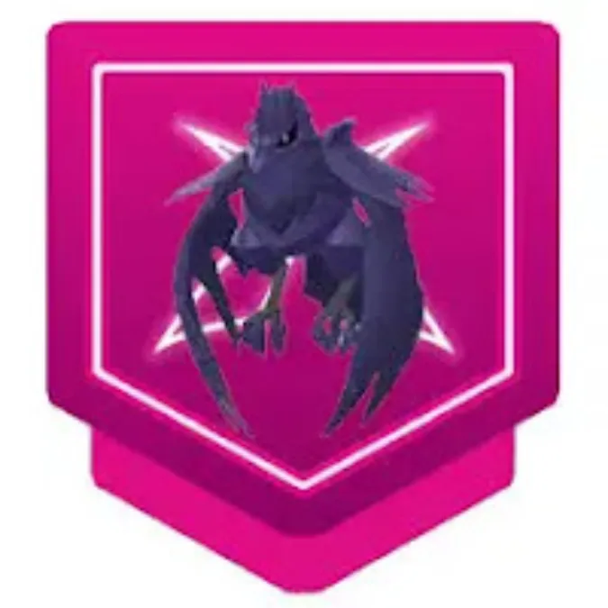

<!--<!doctype html>
<html lang="en">
<head>
  <meta charset="utf-8" />
  <meta name="viewport" content="width=device-width, initial-scale=1" />
  <title>Gigantamax Flapple Raid Guide — Best Counters, Teams & Strategy | Pokémon Gaming</title>
  <meta name="description" content="Gigantamax Flapple raid guide for Pokémon GO — weaknesses, top counters, recommended teams, moveset analysis, weather tips, player counts and FAQ. Complete, actionable strategies for trainers of all levels." />
  <link rel="canonical" href="https://pokemongaming.in/gigantamax-flapple-raid-guide<!--.html" />
  <style>
    /* Minimal in-article styles — adapt to your site CSS */
    body { font-family: Inter, system-ui, -apple-system, "Segoe UI", Roboto, "Helvetica Neue", Arial; color:#222; line-height:1.6; padding:18px; }
    .lead { font-size:1.05rem; margin-bottom:1em; color:#2b2b2b; }
    h1 { font-size:1.8rem; margin-bottom:0.25rem; }
    h2 { margin-top:1.1rem; margin-bottom:0.5rem; font-size:1.25rem; }
    h3 { margin-top:0.85rem; margin-bottom:0.4rem; font-size:1.05rem; }
    table { border-collapse:collapse; width:100%; margin:12px 0; }
    th, td { border:1px solid #e8e8e8; padding:10px 12px; text-align:left; vertical-align:top; }
    th { background:#fafafa; font-weight:700; }
    .note { background:#fff8e6; padding:10px; border-left:4px solid #ffb74d; margin:12px 0; }
    .pro-tip { background:#e8f8f1; padding:10px; border-left:4px solid #48c78e; margin:12px 0; }
    .author-box { border-top:1px solid #eee; padding-top:14px; margin-top:20px; display:flex; gap:12px; align-items:center; }
    .author-box img { width:56px; height:56px; border-radius:50%; object-fit:cover; }
    .small { font-size:0.92rem; color:#666; }
    ol, ul { margin-left:1.1rem; margin-bottom:1rem; }
    .cta { display:inline-block; padding:8px 12px; background:#2f855a; color:white; border-radius:6px; text-decoration:none; }
    .faq q { font-style:italic; }
    pre.code { background:#f4f4f4; padding:12px; overflow:auto; }
  </style>
</head>
<body>
<article>
  <header>
    <h1>Gigantamax Flapple Raid Guide — Best Counters, Teams & Strategy</h1>
    <p class="lead">Gigantamax Flapple turns a familiar Apple Pokémon into a bulky Grass/Dragon (or Grass/Poison depending on form) raid boss with increased HP pool and boosted move potency. This guide gives you the best counters, team builds, charged-move analysis, weather considerations, and step-by-step tactics so your group clears fast and efficiently. Practical, tested, and written in a gaming-blog tone for quick use.</p>
    <p class="small">Last updated: <strong>October 27, 2025</strong></p>
  </header>

  <section>
    <h2>Gigantamax Flapple — Quick Overview</h2>
    <p>Gigantamax Flapple commonly appears as Grass/Dragon or Grass/Poison variant depending on event/form; both keep Grass as the primary identity. Expect high HP and charged moves such as <em>Frenzy Plant</em>, <em>Dragon Pulse</em>, or <em>Sludge Bomb</em> in different variants. Because of this, Flapple is vulnerable to Ice, Dragon, Fairy and Fire depending on the exact typing—Ice and Dragon are consistently valuable. Your objective: bring high burst Ice or Dragon damage and some bulk to survive heavy charged moves.</p>
    <p class="pro-tip"><strong>Pro tip:</strong> Always preview the raid charged move. If Flapple shows Dragon-type charged moves, prioritize Dragon and Ice counters; if it shows Poison coverage, add Psychic/Fairy options.</p>
  </section>

  <section>
    <h2>Weakness & Type Chart</h2>
    <table aria-label="Weakness chart">
      <thead>
        <tr><th>Type</th><th>Effect vs Gigantamax Flapple</th></tr>
      </thead>
      <tbody>
        <tr><td>Ice</td><td>Super effective (×1.6) — best overall when Flapple retains Dragon/Grass interactions.</td></tr>
        <tr><td>Dragon</td><td>Super effective (×1.6) — top choice if Flapple uses Dragon moves or is Dragon-typed.</td></tr>
        <tr><td>Fairy</td><td>Super effective (×1.6) — excellent vs Dragon variants.</td></tr>
        <tr><td>Fire</td><td>Super effective (×1.6) — strong vs Grass typing; consistent pick.</td></tr>
        <tr><td>Poison</td><td>Neutral — only relevant if Flapple is Grass/Poison; Psychic counters then become more valuable.</td></tr>
        <tr><td>Water / Electric</td><td>Resisted or neutral — not primary counters.</td></tr>
      </tbody>
    </table>
    <p class="note">Note: If the raid-specific Flapple is Grass/Poison (event forms), Psychic and Ground can be useful. Ice + Dragon covers the widest range of possible movesets.</p>
  </section>

  <section>
    <h2>Top Counters — Ranked List</h2>
    <p>Ranked counters below focus on DPS, survivability, availability, and how well they handle Gigantamax HP pools.</p>

    <table aria-label="Best counters list">
      <thead>
        <tr><th>Rank</th><th>Pokémon</th><th>Recommended Moveset</th><th>Why</th></tr>
      </thead>
      <tbody>
        <tr><td>1</td><td>Kyurem</td><td>Dragon Breath / Outrage or Ice Beam</td><td>Top Dragon/Ice hybrid; tears through Grass/Dragon bosses.</td></tr>
        <tr><td>2</td><td>Mamoswine</td><td>Powder Snow / Avalanche</td><td>Excellent Ice DPS and widely accessible.</td></tr>
        <tr><td>3</td><td>White Kyurem / Reshiram (if Dragon/Fire moveset)</td><td>Dragon Breath / Fusion Flare or Overheat</td><td>Powerful hybrid options when Dragon+Fire coverage is useful.</td></tr>
        <tr><td>4</td><td>Dialga</td><td>Dragon Breath / Draco Meteor</td><td>Top-tier Dragon attacker with great bulk.</td></tr>
        <tr><td>5</td><td>Garchomp</td><td>Dragon Tail / Outrage</td><td>Fast Dragon STAB; useful if you lack legendaries.</td></tr>
        <tr><td>6</td><td>Galarian Darmanitan</td><td>Ice Fang / Icicle Crash</td><td>High Ice DPS for pure Ice coverage.</td></tr>
        <tr><td>7</td><td>Gardevoir (Shadow or regular)</td><td>Confusion / Dazzling Gleam</td><td>Fairy coverage vs Dragon; great vs poison variant if Psychic not needed.</td></tr>
        <tr><td>8</td><td>Salamence</td><td>Dragon Breath / Draco Meteor</td><td>Solid Dragon attacker with accessibility.</td></tr>
        <tr><td>9</td><td>Tapu Fini</td><td>Bubble / Moonblast</td><td>Fairy coverage with bulk, useful for mixed fights.</td></tr>
        <tr><td>10</td><td>Charizard (Blast Burn) / Heatran</td><td>Fire Spin / Blast Burn or Fire Spin / Flamethrower</td><td>Fire counters to exploit Flapple's Grass typing.</td></tr>
      </tbody>
    </table>

    <p class="small">Tip: Mamoswine is often the easiest and most cost-effective Ice pick for most players; if you have Kyurem or Dialga, they will outperform in many scenarios.</p>
  </section>

  <section>
    <h2>Moveset Mapping — Pick Counters by Charged Move</h2>
    <p>Check the boss preview to select the most appropriate counters. The table maps common charged moves to recommended counter types and examples.</p>

    <table aria-label="Moveset to counter mapping">
      <thead>
        <tr><th>Flapple Charged Move</th><th>Primary Counter Type</th><th>Recommended Pokémon</th></tr>
      </thead>
      <tbody>
        <tr><td>Frenzy Plant / Dragon Pulse</td><td>Ice / Dragon</td><td>Mamoswine, Kyurem, Dialga</td></tr>
        <tr><td>Frenzy Plant / Sludge Bomb (Poison variant)</td><td>Fire / Psychic</td><td>Charizard (Blast Burn), Gardevoir, Mewtwo (Psystrike)</td></tr>
        <tr><td>Petal Blizzard / Draco Meteor</td><td>Ice / Fairy</td><td>Mamoswine, Gardevoir, Tapu Fini</td></tr>
        <tr><td>Leaf Storm / Dragon Claw</td><td>Ice / Dragon</td><td>Kyurem, Dialga, Salamence</td></tr>
      </tbody>
    </table>

    <p class="note">If you see a Poison-type charged move preview (Sludge Bomb), avoid pure Poison-weak counters and bring Psychic/Fairy options alongside Ice/Dragon picks.</p>
  </section>

  <section>
    <h2>How Many Players Are Needed?</h2>
    <table aria-label="players-needed">
      <thead>
        <tr><th>Team Quality</th><th>Players Required (Approx.)</th><th>Notes</th></tr>
      </thead>
      <tbody>
        <tr><td>Top meta teams (Kyurem / Dialga / Mamoswine)</td><td>2–3</td><td>Well-coordinated duo/trio with high-level legendaries and weather boost.</td></tr>
        <tr><td>Strong players with good counters</td><td>3–5</td><td>Most common local raid groups.</td></tr>
        <tr><td>Mixed/casual players</td><td>6–9</td><td>Bring a mix of Ice, Dragon, and Fire counters to ensure steady damage.</td></tr>
      </tbody>
    </table>
    <p class="note">Gigantamax HP pools are large—if most players bring non-optimal counters, required numbers rise quickly. Encourage players to prioritize Ice/Dragon/Fire for fastest clears.</p>
  </section>

  <section>
    <h2>Sample Party Builds (Practical Setups)</h2>
    <p>Use these sample teams depending on your roster — numbers show swap priority.</p>

    <h3>Meta Party (2–3 players)</h3>
    <ol>
      <li>Kyurem (Dragon Breath / Outrage or Ice Beam)</li>
      <li>Dialga (Dragon Breath / Draco Meteor)</li>
      <li>Mamoswine (Powder Snow / Avalanche)</li>
      <li>Gardevoir (Confusion / Dazzling Gleam)</li>
      <li>Charizard (Blast Burn) or Heatran</li>
    </ol>

    <h3>Balanced Group (3–5 players)</h3>
    <ol>
      <li>Mamoswine</li>
      <li>Salamence</li>
      <li>Gardevoir</li>
      <li>Tapu Fini</li>
      <li>Charizard (Blast Burn)</li>
    </ol>

    <h3>Beginner / Casual Party (6–9 players)</h3>
    <ol>
      <li>High-level Ice attackers (Mamoswine, Galarian Darmanitan)</li>
      <li>One or two Dragon attackers (Garchomp, Salamence)</li>
      <li>One Fire attacker for Grass coverage</li>
    </ol>
  </section>

  <section>
    <h2>Battle Strategy — Step by Step</h2>
    <ol>
      <li><strong>Preview the charged move</strong> before the raid to confirm whether Dragon or Poison coverage is present — adjust party accordingly.</li>
      <li><strong>Lead with an Ice or Dragon DPS</strong> to build early pressure while shields are typically unused.</li>
      <li><strong>Save shields</strong> in small groups for heavy nukes like Draco Meteor or Frenzy Plant.</li>
      <li><strong>Switch to Fairy/Psychic</strong> if Gigantamax Flapple shows Sludge Bomb or other Poison moves; these mitigate the Poison threat.</li>
      <li><strong>Use Megas</strong> that boost Dragon/Ice/Fire where appropriate — Megas that increase your team's damage type reduce player count significantly.</li>
      <li><strong>Coordinate revives</strong> — stagger revives to avoid simultaneous fainting on a follow-up charged move.</li>
    </ol>

    <p class="pro-tip">If you’re in a mixed group, encourage a 2:1 ratio of Ice/Dragon to Fairy/Fire — this covers most move previews and keeps DPS optimal across variants.</p>
  </section>

  <section>
    <h2>IV / Level & Resource Advice</h2>
    <p>Prioritize powering a couple of top Ice or Dragon attackers with correct movesets rather than many middling Pokémon. Mamoswine, Kyurem (if available), and Dialga are excellent single-purpose investments; Charizard Blast Burn remains a budget-friendly Fire alternative for Grass coverage.</p>
  </section>

  <section>
    <h2>Weather Effects & Their Impact</h2>
    <ul>
      <li><strong>Snow / Hail (if present)</strong> — boosts Ice moves — ideal for Mamoswine and Ice counters.</li>
      <li><strong>Windy</strong> — boosts Dragon/Flying (helps Dragon attackers).</li>
      <li><strong>Sunny/Clear</strong> — boosts Fire (useful for Fire counters vs Grass).</li>
      <li><strong>Clear or neutral</strong> — safe to join with your standard Ice/Dragon party.</li>
    </ul>
    <p class="small">Prefer the weather that boosts Ice/Dragon/Fire depending on your roster to shorten the fight and reduce player count.</p>
  </section>

  <section>
    <h2>Common Mistakes to Avoid</h2>
    <ul>
      <li>Bringing only Grass or Water attackers — they will be resisted and prolong the raid.</li>
      <li>Not checking the charged move — Dragon vs Poison changes counter priorities drastically.</li>
      <li>Overloading on low-quality counters — it's better to have fewer optimized counters than many under-leveled ones.</li>
    </ul>
  </section>

  <section>
    <h2>Related Guides</h2>
    <ul>
      <li><a href="/gigantamax-venusaur-raid-guide.html">Gigantamax Venusaur Raid Guide</a></li>
      <li><a href="/mega-metagross-raid-guide.html">Mega Metagross Raid Guide</a></li>
      <li><a href="/mega-charizard-x-raid-guide.html">Mega Charizard X Raid Guide</a></li>
    </ul>
  </section>

  <section>
    <h2>Frequently Asked Questions (FAQ)</h2>
    <div class="faq">
      <h3>Q: <q>Is Gigantamax Flapple weak to Ice?</q></h3>
      <p>A: Yes — Ice is one of the best overall choices, especially when Flapple has Dragon typing or uses Dragon-type charged moves.</p>

      <h3>Q: <q>Can I solo Gigantamax Flapple?</q></h3>
      <p>A: Soloing is extremely difficult due to the Gigantamax HP pool. Only the highest-level trainers with multiple maxed legendaries and perfect weather boosts could attempt it. Groups of 2–3 elite trainers or 3–6 strong trainers are realistic.</p>

      <h3>Q: <q>Which Pokémon should I prioritize powering?</q></h3>
      <p>A: Power Mamoswine for Ice coverage, then Kyurem or Dialga for Dragon options. If you lack legendaries, a powered Charizard (Blast Burn) + Mamoswine combo covers most scenarios.</p>

      <h3>Q: <q>Does weather matter a lot for this raid?</q></h3>
      <p>A: Yes — weather that boosts Ice, Dragon, or Fire can significantly reduce the number of players required and speed up the fight.</p>

      <h3>Q: <q>Should I bring Fairy or Psychic counters?</q></h3>
      <p>A: Bring a Fairy or Psychic if Flapple shows Poison-type charged moves (Sludge Bomb); otherwise prioritize Ice/Dragon/Fire.</p>
    </div>
  </section>

  <footer>
    <div class="author-box">
      
      <div>
        <strong>Written by Abhishek</strong>
        <p class="small">Pokémon GO Trainer & Guide Writer. I test teams in real raids and update guides with the latest raid data to keep these pages accurate.</p>
        <p class="small">Want more guides? <a class="cta" href="/guides.html">See all guides</a></p>
      </div>
    </div>

    <p class="small" style="margin-top:12px;">Disclaimer: Pokémon, Pokémon GO and related trademarks are the property of Nintendo / The Pokémon Company. This guide is fan-created and not affiliated with the official owners.</p>
  </footer>

  <!-- FAQ schema (JSON-LD) -->
  <script type="application/ld+json">
  {
    "@context": "https://schema.org",
    "@type": "FAQPage",
    "mainEntity": [
      {
        "@type": "Question",
        "name": "Is Gigantamax Flapple weak to Ice?",
        "acceptedAnswer": {
          "@type": "Answer",
          "text": "Yes — Ice is one of the best overall choices, especially when Flapple has Dragon typing or uses Dragon-type charged moves."
        }
      },
      {
        "@type": "Question",
        "name": "Can I solo Gigantamax Flapple?",
        "acceptedAnswer": {
          "@type": "Answer",
          "text": "Soloing is extremely difficult due to the Gigantamax HP pool. Only the highest-level trainers with multiple maxed legendaries and perfect weather boosts could attempt it."
        }
      },
      {
        "@type": "Question",
        "name": "Which Pokémon should I prioritize powering?",
        "acceptedAnswer": {
          "@type": "Answer",
          "text": "Power Mamoswine for Ice coverage, then Kyurem or Dialga for Dragon options. If you lack legendaries, a powered Charizard (Blast Burn) + Mamoswine combo covers most scenarios."
        }
      }
    ]
  }
  </script>
</article>
</body>
</html>
-->

<!DOCTYPE html>
<html lang="en">
<head>
  <meta charset="utf-8" />
  <title>Gigantamax Flapple Raid Guide — Counters, Moves & Strategy | Pokémon GO</title>
  <meta name="viewport" content="width=device-width,initial-scale=1" />
  <meta name="description" content="Complete Gigantamax Flapple raid guide for Pokémon GO — weaknesses, best Gigantamax & Dynamax counters, movesets, weather tips, recommended lobby sizes, rewards and battle strategy." />
  <meta name="robots" content="index, follow" />
  <link rel="stylesheet" href="posts.css"/>

<meta property="og:title" content="Gigantamax Flapple Raid Guide — Counters, Moves & Strategy">
  <meta property="og:description" content="Defeat Gigantamax Flapple in Pokémon GO raids: learn its weaknesses, best Gigantamax and Dynamax counters, moveset warnings, weather interactions, and catch tips.">
  <meta property="og:type" content="article">
  <meta property="og:url" content="https://pokemongaming.in/raids/gigantamax_flapple.html">
  <meta property="og:image" content="https://pokemongaming.in/raids/images/gigantamax_flapple_cover.webp">

</head>
<body>
 
    <section class="hero" aria-labelledby="hero-h">

<header>
  <h1>Gigantamax Flapple — Raid Guide</h1>
</header>


      
    </section>

<main>
    <section class="intro">
      <p>Gigantamax Garbodor is one of the most unique and surprisingly strong Pokémon in both Pokémon GO and Pokémon Sword & Shield. Its massive heap of junk hides dangerous toxins and discarded objects, turning its trash pile into a weaponized fortress. With its exclusive <strong>G-Max Malodor</strong> move, this Garbage Pokémon can spread poison across the battlefield while dealing solid damage.</p>
      <p>This guide will cover everything from its weaknesses and counters to movesets and strategies for defeating Gigantamax Garbodor efficiently.</p>
    </section>


<section class="toc">
      <h3>Table of Contents</h3>
      <a href="#overview">Overview</a>
      <a href="#weakness">Weakness</a>
      <a href="#counters">Best Pokemon</a>
      <a href="#gigantamax">Best Gigantamax Counters</a>
      <a href="#dynamax">Dynamax & Support Picks</a>
      <a href="#moveset">Moveset</a>
      <a href="#weather">Weather Effects & Battle Flow</a>
      <a href="#size">Size</a>
      <a href="#rewards">Rewards</a>
      <a href="#avoid">Avoid</a>
      <a href="#faq">FAQs</a>
      <a href="#conclusion">Conclusion</a>
    </section>


    <div class="grid" style="margin-top:14px">
      <article class="card" id="guide">
        <h2>Quick summary</h2>
        <div class="kvs" aria-hidden="false">
<div><strong>Species:</strong> Flapple (Gigantamax)</div>
          <div><strong>Type:</strong> Grass / Dragon </div>
          <div><strong>Primary weaknesses:</strong> Ice, Flying, Poison, Bug, Dragon, Fairy</div>
          <div><strong>Recommended lobby:</strong> 15-20 trainers</div>
                 </div>
<hr style="border: 0; height: 2px; background-color: red; margin: 20px 0;">


        <section id="overview">
        <!--<p class="note">-->
      <h2>Overview</h2>
      <p>Gigantamax Flapple is a Grass and Dragon-type raid boss featured in special Pokémon GO events. With its unique apple-winged form, it’s both a fun raid and a collector’s prize. Flapple is weak to Ice, Flying, Poison, Dragon, and Fairy-type Pokémon, giving trainers many options for effective counters.This guide explains everything trainers need to beat Gigantamax Flapple reliably in Pokémon GO raids — from weaknesses and recommended Gigantamax counters to Dynamax picks, weather interactions, team-size guidance, and catch/reward tips.

     </p>
<hr style="border: 0; height: 2px; background-color: red; margin: 20px 0;">


        <section id="weakness">
 <h2>Weakness & Typing</h2>

        <div class="tbl" aria-label="Weaknesses table">
          <table>
            <thead><tr><th>Category</th><th>Details</th></tr></thead>
            <tbody>
              <tr>
                <td><strong>Weak to</strong></td>
                <td>
                   Ice •
                   Flying •
                   Poison •
                   Bug •
                   Dragon •
                   Fairy
                </td>
              </tr>
              <tr>
                <td><strong>Resists</strong></td>
                <td>
                   Ground •
                   Electric •
                   Grass •
                   Water
</td>
              </tr>
              <tr>
                <td><strong>Notes</strong></td>
                <td>Gigantamax bosses often use Max Moves — these can be powerful, sometimes buffing or changing battlefield conditions. Expect higher HP and potentially team-wide effects.</td>
              </tr>
            </tbody>
          </table>
<hr style="border: 0; height: 2px; background-color: red; margin: 20px 0;">

        </div>

     <section id="counters">
<h2>Best Pokemon</h2>

  <h3>Gigantamax-type Counters</h3>
  <ul>
    <li><strong>Charizard</strong> </li>
    <li><strong>Lapras</strong> </li>
  </ul>

  <h3>Dynamax-type Counters</h3>
  <ul>
    <li><strong>Articuno</strong> </li>
    <li><strong>Cryogonal</strong></li>
    <li><strong>Metagross</strong> </li>
    <li><strong>Gengar</strong> </li>
    <li><strong>Latios</strong> </li>
    <li><strong>Zapdos</strong> </li>
  </ul>

<hr style="border: 0; height: 2px; background-color: red; margin: 20px 0;">
<section id="gigantamax">

<h2>Best Gigantamax Counters</h2>
      <p>Gigantamax Pokémon that amplify the right types give you a powerful edge. Below are top Gigantamax counters with short notes on why they excel vs G-Max Flapple.</p>


         <div class="tbl" aria-label="Gigantamax Counters table">
          <table>
            <thead>
              <tr>
                <th>Pokémon</th>
                <th>Fast Moves</th>
                <th>Gigantamax Moves</th>
                <th>Charged Moves</th>
                <th>Elite Moves</th>
                <th>Best Moves</th>
              </tr>
            </thead>
            <tbody>

   <tr>
                <td>
              <!-- <div class="poke-cell">
                <strong>-->Gigantamax Lapras<!--</strong></div>-->
                </td>
                <td>Frost Breath, Water Gun, Psywave</td>
                <td>G-Max Resonance</td>
                <td>Blizzard, Hydro Pump, Surf, Skull Bash, Sparkling Aria</td>
<td>Ice Shard, Ice Beam, Dragon Pulse</td>
<td>Frost Breath(11) and G-Max Resonance(350)</td>

              </tr>


 <tr>
              <td>
               <!--  <div class="poke-cell">
                  <strong>--> Gigantamax Snorlax <!--</strong></div>-->

                </td>
                <td>Lick, Zen Headbutt</td>
                <td>G-Max Replenish</td>
                <td>Heavy Slam, Earthquake, Hyper Beam, Outrage, Skull Bash, Body Slam, Superpower</td>
<td>Yawn</td>
                <td>Zen Headbutt(11) and G-Max Replenish(350)</td>
              </tr>

<tr>
              <td>
               <!--  <div class="poke-cell">
                <strong>--> Gigantamax Charizard <!--</strong></div>-->

                </td>
                <td>Air Slash, Fire Spin</td>
                 <td>G-Max Wildfire</td>
          <td>Overheat, Fire Blast, Dragon Claw</td>
          <td>Dragon Breath, Ember, Wing Attack, Flamethrower, Blast Burn</td>
          <td>Fire Spin(13) and G-Max Wildfire(350)</td>
              </tr>


<tr>
              <td>
                <!-- <div class="poke-cell">
                <strong>--> Gigantamax Gengar<!--</strong></div>-->

                </td>
                <td>Sucker Punch, Shadow Claw, Hex</td>
                <td>G-Max Terror</td>
                <td>Shadow Ball, Sludge Bomb, Focus Blast, Drain Punch</td>
                <td>Lick, Dark Pulse, Shadow Punch, Sludge Wave, Psychic</td>
<td>Hex(8) and G-Max Terror(350)</td>
              </tr>

<tr>
                <td>
          <!--     <div class="poke-cell"><strong>-->Gigantamax Machamp<!--</strong></div>--></td>
               
                <td>Bullet Punch, Counter</td>
                <td>G-Max Chi Strike</td>
                <td>Cross Chop, Rock Slide, Close Combat, Dynamic Punch, Heavy Slam</td>
<td>Payback, Submission, Stone Edge, Karate Chop</td>
<td>Counter(13) and G-Max Chi Strike(350)</td>
              </tr>

           <tr>
              <td>
                <!-- <div class="poke-cell">
                <strong>--> Gigantamax Cinderace<!--</strong></div>-->

                <td>Tackle, Fire Spin</td>
                <td>G-Max Fireball</td>
                <td>Flamethrower, Flame Charge, Focus Blast</td>
                <td>-</td>
<td>Fire Spin(13) and G-Max Fireball(350)</td>
              </tr>


            </tbody>
          </table>
<hr style="border: 0; height: 2px; background-color: red; margin: 20px 0;">

        </div>

<section id="dynamax">
<h2>Dynamax & Support Picks</h2>
      <p>Not every raid group will have multiple Gigantamax picks. Dynamax Pokémon make excellent support, either by adding burst damage or soaking time during G-Max residual windows.</p>


       <div class="tbl" aria-label="Dynamax Counters table">
          <table>
            <thead>
              <tr>
                <th>Pokémon</th>
                <th>Dynamax Moves</th>
                <th>Fast Moves</th>
                <th>Charged Moves</th>
                <th>Elite Moves</th>
              </tr>
            </thead>
            <tbody>

<tr>
              <td>
              <!--   <div class="poke-cell">
                <strong>--> Dynamax Excadrill<!--</strong></div>-->

                </td>
                <td>Max Quake, Max Steelspike</td>
          <td>Metal Claw, Mud Slap, Mud Shot</td>
          <td>Rock Slide, Earthquake, Drill Run, Iron head, Scorching Sands</td>
          <td>-</td>
              </tr>
 <tr>
                <td>
           <!--    <div class="poke-cell"><strong>-->Dynamax Cryogonal<!--</strong></div>--></td>                
                 <td>Max Hailstorm</td>
          <td>Ice Shard, Frost Breath</td>
          <td>Aurora Beam, Night Slash, Solar Beam, Water Pulse, Triple Axel</td>
          <td>-</td>
              </tr>


<tr>
              <td>
             <!--  <div class="poke-cell"><strong>-->Dynamax Articuno<!--</strong></div>-->
                </td>
                <td>Max HailStorm</td>
                <td>Frost Breath, Ice Shard</td>
                <td>Blizzard, Ice Beam, Icy Wind, Ancient Power, Triple Axel</td>
<td>Hurricane</td>
            </tr>

<tr>
              <td>
             <!--    <div class="poke-cell">
                <strong>--> Dynamax Metagross<!--</strong></div>-->

                </td>
                <td>Max Mindstorm, Max Flutterby, Max Steelspike</td>
          <td> Zen Headbutt, Bullet Punch, Fury Cutter</td>
          <td> Flash Cannon, Psychic, Earthquake</td>
          <td> Meteor Mash</td>
              </tr>

<tr>
              <td>
              <!--   <div class="poke-cell">
                <strong>--> Zamazenta<!--</strong></div>-->

                </td>
                <td>Behemoth Bash</td>
          <td>Metal Claw, Ice Fang</td>
          <td>Moonblast, Giga Impact, Close Combat</td>
                <td>-</td>
              </tr>


 <tr>
              <td>
              <!--   <div class="poke-cell">
                <strong>--> Dynamax Latios<!--</strong></div>-->

                </td>
                <td>Max Wyrmwind, Max Mindstorm</td>
          <td>Dragon Breath, Zen Headbutt</td>
          <td>Psychic, Solar Beam, Dragon Claw, Aura Sphere</td>
          <td>Luster Purge</td>
              </tr>

<tr>
              <td>
             <!--    <div class="poke-cell">
                <strong>--> Dynamax Gengar<!--</strong></div>-->

                </td>
                <td>Max Darkness, Max Phantasm</td>
                <td>Sucker Punch, Hex, Shadow Claw</td>
          <td>Focus Blast, Shadow Ball, Sludge Bomb, Drain Punch, Shadow Punch</td>
                <td>Lick, Psychic, Dark Pulse, Sludge Wave</td>
              </tr>

<tr>
                <td>
              <!-- <div class="poke-cell"><strong>-->Dynamax Blissey<!--</strong></div>-->
                </td>
                 <td>Max Strike, Max Mindstorm</td>
          <td>Pound, Zen Headbutt</td>
          <td>Dazzling Gleam, Hyper Beam, Psychic</td>
          <td>Wild Charge</td>
              </tr>

<tr>
              <td>
               <!--  <div class="poke-cell">
                <strong>--> Dynamax Zapdos<!--</strong></div>-->

                </td>
                <td>Max Lightning</td>
                <td>Charge Beam</td>
          <td>Zap Cannon, Thunder, Thunderbolt, Ancient Power, Drill Peck</td>
                <td>Thunder Shock</td>
              </tr>

 

  <tr>
               <td>
             <!--  <div class="poke-cell"><strong>-->Dynamax Unfezant<!--</strong></div>--></td>                
               <td>Max Airstream, Max Steelspike</td>
          <td>Air Slash, Steel Wing</td>
          <td>Heat Wave, Hyper Beam, Sky Attack</td>
          <td>-</td>
              </tr>

 <tr>
                <td>
           <!--    <div class="poke-cell"><strong>-->Dynamax Toxtricity<!--</strong></div>-->
                </td>
                <td>Max Lightning, Max Ooze</td>
          <td>Acid, Spark, Poison Jab</td>
          <td>Acid Spray, Discharge, Wild Charge, Power-Up Punch</td>
          <td>-</td>
              </tr>

 <tr>
                <td>
             <!--  <div class="poke-cell"><strong>-->Dynamax Charizard<!--</strong></div>--></td>               
               <td>Max Flare, Max Airstream, Max Wyrmwind</td>
                <td>Fire Spin, Air Slash</td>
                <td>Dragon Claw, Fire Blast, Overheat, Air Cutter</td>
<td>Ember, Wing Attack, Dragon Breath, Blast Burn, Flamethrower</td>
              </tr>

<tr>
              <td>
             <!--    <div class="poke-cell">
                <strong>--> Dynamax Hatterene<!--</strong></div>-->

                </td>
                <td>Max Starfall, Max MindStorm</td>
          <td>Confusion, Charm, Psycho Cut</td>
          <td>Psyshock, Psychic, Dazzling Gleam, Power Whip</td>
          <td>-</td>
              </tr>

<tr>
              <td>
                <!-- <div class="poke-cell">
                <strong>--> Dynamax Suicune <!--</strong></div>-->
                </td>
                <td> Max Mindstorm, Max Hailstorm, Max Darkness</td>
          <td>Extrasensory, Snarl, Ice Fang, Hidden Power</td>
          <td>Hydro Pump, Bubble Beam, Water Pulse, Ice Beam, Scald</td>
          <td>-</td>
              </tr>


<tr>
              <td>
            <!--     <div class="poke-cell">
                <strong>--> Dynamax Latias<!--</strong></div>-->
                </td>
                <td>Max Wyrmwind, Max Mindstorm, Max Starfall</td>
          <td>Dragon Breath, Zen Headbutt, Charm</td>
          <td>Psychic, Thunder, Outrage, Aura Sphere</td>
<td>Mist Ball</td>

              </tr>

            <tr>
              <td>
              <!--   <div class="poke-cell">
                <strong>--> Eternatus<!--</strong></div>-->

                </td>
                <td> Dynamax Cannon</td>
          <td>Dragon Tail, Poison Jab</td>
          <td>Sludge Bomb, Dragon Pulse, Flamethrower</td>
          <td>-</td>
              </tr>


<tr>
              <td>
             <!--    <div class="poke-cell">
                <strong>--> Dynamax Kabutops<!--</strong></div>-->

                </td>
                <td>Max Knuckle, Max Quake, Max Geyser, Max Flutterby</td>
          <td>Rock Smash, Mud Shot, Waterfall</td>
          <td>Ancient Power, Stone Edge, Water Pulse</td>
                <td>Fury Cutter</td>
              </tr>

 <tr>
                <td>
              <!-- <div class="poke-cell">
                <strong>-->Dynamax Corviknight<!--</strong></div>-->
                </td>
                <td>Max Airstream, Max Steelspike, Max Quake</td>
                <td>Steel Wing, Air Slash, Sand Attack</td>
                <td>Sky Attack, Payback</td>
                <td>Air Cutter, Iron Head</td>
              </tr>

<tr>
              <td>
              <!--   <div class="poke-cell">
                <strong>--> Dynamax Moltres<!--</strong></div>-->

                </td>
                <td>Max Flare, Max Airstream</td>
          <td>Fire Spin, Wing Attack</td>
          <td>Fire Blast, Overheat, Heat Wave, Ancient Power</td>
                <td>Sky Attack</td>
              </tr>

<tr>
              <td>
             <!--    <div class="poke-cell">
                <strong>--> Zacian<!--</strong></div>-->

                </td>
                <td>Behemoth Blade</td>
          <td>Metal Claw, Air Slash</td>
          <td>Play Rough, Giga Impact, Close Combat</td>
<td>-</td>
              </tr>


            </tbody>
          </table>
<hr style="border: 0; height: 2px; background-color: red; margin: 20px 0;">

        </div>

  <!--  <section class="ads card" aria-label="Advertisement">
      <ins class="adsbygoogle"
           style="display:block"
           data-ad-client="ca-pub-XXXXXXXXXXXXXX"
           data-ad-slot="2222222222"
           data-ad-format="in-article"
           data-full-width-responsive="true"></ins>
      <script>(adsbygoogle = window.adsbygoogle || []).push({});</script>
    </section>-->


<section class="grid two">
      <article class="card" id="moves">
<section id="moveset">
        <h2>Moves & Threats</h2>

        <p>Flapple common fast moves are <strong>Dragon Breath</strong> or <strong>Bullet Seed</strong>. Charged moves include <strong>Seed Bomb</strong> or <strong>Dragon Pulse</strong> or <strong>Outrage</strong> and <strong>Fly</strong>. G-Max Tartness not only delivers heavy damage but also leaves a damaging area for a short time — timing your swaps and using at least one bulky support reduces wipe risk.</p>
<hr style="border: 0; height: 2px; background-color: red; margin: 20px 0;">


 </article>
<aside class="card" id="cp">
        <h2>CP & IV (Catch)</h2>
        <ul>
          <li><strong>Perfect (L20):</strong> 1,338-1,409 CP</li>
          <li><strong>Weather Boost (L25):</strong> 1,673-1,761 CP</li>
          <li><span class="pill">Boosted by: <strong>Windy</strong> & <strong>Sunny</strong></span></li>
        </ul>
        <p class="note">Use Pinap on poor IVs; switch to Golden Razz on 96%+ or Shiny.</p>
<hr style="border: 0; height: 2px; background-color: red; margin: 20px 0;">

      </aside>
    </section>

    <section class="card" id="weather">
      <h2>Weather Effects</h2>
     <p><strong>Windy weather :</strong> boosts <strong> Dragon</strong> moves. <strong>Snowy weather:</strong> boosts <strong> Ice </strong> counters. <strong>Cloudy weather:</strong> boosts <strong> Fairy</strong> moves. <strong>Sunny weather :</strong> boosts <strong> Flapple Grass</strong> moves.</p>
<hr style="border: 0; height: 2px; background-color: red; margin: 20px 0;">

          </section>


<!--<p>Watch for Ice Beam, which punishes Grass-type counters heavily. Balance your team with Electric attackers.</p>

          <!-- <h2 id="tips">Practical battle tips</h2>-->
      <h2>Battle Tips</h2>
      <ul>
       <li>Front-load your best Electric/Grass DPS to capitalize on early damage windows.</li>
                   <li>Coordinate dodges only on heavy Max Moves — constant dodging reduces overall DPS in long fights.</li>
          <li>Star and favorite teams to reduce relobby time; players in large groups should communicate role.</li>
      </ul>-->

         <section id="size">
       <h2 id="team-size">Size</h2>

        <p>Recommended: <strong>15–20 trainers</strong> for comfortable clears with mixed player levels. With many Gigantamax / Dynamax counters, 10–14 can work. Under 8 trainers should be attempted only if all participants are high-level and coordinated with ideal counters and Dynamax/G-Max boosts.</p>

<hr style="border: 0; height: 2px; background-color: red; margin: 20px 0;">

 <section id="rewards">
 <h2>Rewards</h2>
  <p>Reasons include Pokédex entry,  Grass / Dragon attacker, shiny chance, and XL Candy farming.</p>
</section>

<hr style="border: 0; height: 2px; background-color: red; margin: 20px 0;">


<!--h2>When To Avoid</h3>
<p class="small">Avoid Ground, Fire, and Rock Pokémon — they take heavy damage from Flapple’s Water moves.</p>
 </p>-->

       <h2 id="catch">Raid Strategy & Catch Tips</h2>
        <p>
          Focus on Ice and Fairy-types, as they deal double damage to Flapple and resist some of its attacks. Dragon-types are strong but risky due to Flapple’s Dragon moves. Coordinate with 14–16 strong trainers to ensure a smooth victory.</p>
<hr style="border: 0; height: 2px; background-color: red; margin: 20px 0;">


        <section id="faq" aria-label="FAQ">
          <h2>FAQ</h2>
          <h3>What is Gigantamax Flapple type and weakness?</h3>
<p>Flapple is a Grass / Dragon type. It is weak to Ice, Flying, Poison, Bug, Dragon, Fairy.</p>
<h3>What are good counters for G-Max Tartness?</h3>
<p>Strong ice and fairy attackers such as Gigantamax Charizard, Gigantamax Lapras, Gigantamax Snorlax, Gigantamax Gengar, Dynamax Metagross, Dynamax Articuno.</p>      
<h3>Can Gigantamax Flapple be shiny?</h3>
<p>Yes, but in certain events.</p>
<h3>Is Gigantamax Flapple catchable after the raid? </h3>
<p>Yes — standard raid catch mechanics apply.</p>
<h3>Does weather change move sets?</h3>
<p>Sunny weather boosts Flapple’s Grass moves, Windy weather boosts its Dragon moves. Snowy weather helps Ice-type counters, Cloudy weather benefits Fairy-types.</p>
<h3>Does Flapple keep G-Max Tartness?</h3>
<p>No — it’s exclusive to Gigantamax raids.</p>
    <hr style="border: 0; height: 2px; background-color: red; margin: 20px 0;">

        </section>
<section id="conclusion">
<h2>Conclusion</h2>
      <p>Gigantamax Flapple is a mechanically interesting raid boss: its Grass/Dragon combo is predictable, but the G-Max residual damage forces teams to plan for survivability, not just pure DPS. Prioritize Ice and Fairy Gigantamax picks, add Dynamax support for sustained windows, and include at least one high-TDO tank if your lobby is smaller. With the counters and tactics above, you’ll clear Flapple efficiently and maximize your rewards.</p>
</section>

<!--<h2>Related Guides</h2>
<p>Looking for more counters? Check out our 
  <a href="/legendary-raids/solgaleo.html">Solgaleo Raid Guide</a> 
  or learn about 
  <a href="/weather-boosted-raids.html">Weather-Boosted Raids</a>.
</p>-->

<hr style="border: 0; height: 2px; background-color: red; margin: 20px 0;">

</article>

 <aside class="card" aria-label="Sidebar">
        <h2>Quick picks</h2>
        <ul>
           <li><strong>Best types:</strong> Ice, Flying, Poison, Bug, Dragon, Fairy</li>
          <li><strong>Bring:</strong> Gigantamax Lapras, Gigantamax Snorlax, Gigantamax Charizard, Gigantamax Gengar</li>
          <li><strong>Support:</strong> Dynamax Metagross, Dynamax Articuno, Dynamax Corviknight, Dynamax Moltres</li>
        </ul>
<hr style="border: 0; height: 2px; background-color: red; margin: 20px 0;">


     <!--   <div class="ads" role="complementary" aria-label="secondary ad">
           Replace with second AdSense unit 
          Secondary ad slot — insert AdSense code here
        </div>


        <h3>Image notes</td>
        <p style="font-size:.92rem;color:var(--muted)">Use optimized webp/png images in <code>images/</code> sized ~256×256 and icons in <code>/images/types/</code> (22×22). Compress for performance.</p>-->
      </aside>
</div>
   
  <!--  <section class="card" style="margin-top:12px">
      <h2>Responsible play</h2>
      <p>Play safely, follow local rules and event guidelines, and confirm event windows on Niantic's official Pokémon GO news page. Event details and availability change — always verify on the current event page. :contentReference[oaicite:20]{index=20}</p>
    </section>-->

<section class="author-box">
      <h3>About the Author</h3>
      <p>Written by <strong>Pokémon Gaming Team</strong> — bringing expert raid guides and battle strategies. Explore more guides like <a href="gigantamax-machamp-raid-guide.html">Gigantamax Machamp</a>, <a href="gigantamax-lapras-raid-guide.html">Gigantamax Lapras</a>, <a href="gigantamax-toxtricity-raid-guide.html">Gigantamax Toxtricity</a>, and <a href="gigantamax-charizard-raid-guide.html">Gigantamax Charizard</a>.</p>
    </section>
  </main>


  <footer class="site-footer">
    <div class="footer-content">
      <p>© 2025 Gigantamax Flapple Raid Guide</p>
      <p>
       <a href="../terms&conditions.html">Terms & Conditions</a> |
     <a href="../about-us.html">About</a> | 
<a href="../copyright_page.html">Copyright</a> |
              <a href="../contact-us.html">Contact</a> | 
              <a href="../privacy-policy.html">Privacy Policy</a> |
              <a href="../disclaimer.html">Disclaimer</a>

    </p> 

<p>Pokémon and all related content are © 1995–2025 Nintendo, Game Freak, and The Pokémon Company. All trademarks and content belong to their respective owners and are used here for informational and educational purposes only.
</p>
</div>

  <script>
    document.getElementById('yr') && (document.getElementById('yr').textContent = new Date().getFullYear());
  </script>
</body>
</html>


